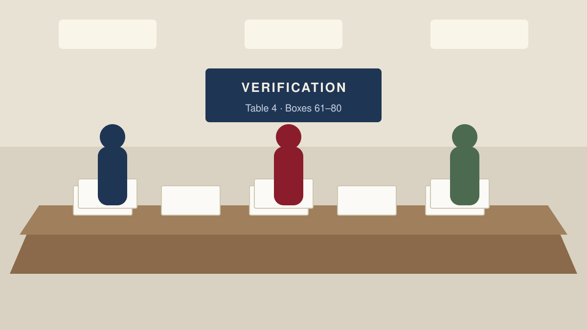

Voting
First Past the Post Explained
The UK elects its MPs with one of the simplest voting systems in the world. Simplicity, though, comes with consequences that shape everything from safe seats to tactical voting.
Plain-English guides to British democracy
From the moment Parliament is dissolved to the first Prime Minister’s Questions of a new term, here is the full sequence of events that turns a nation’s votes into a government.

The UK elects its MPs with one of the simplest voting systems in the world. Simplicity, though, comes with consequences that shape everything from safe seats to tactical voting.

Polling stations open at seven in the morning and close at ten at night. Between those hours a carefully choreographed process unfolds in church halls, schools and community centres across the country.

There are 650 of them, each with its own boundary, its own returning officer and its own single MP. Understanding constituencies is the key to understanding how Parliament is built.

Winning the most seats is only the start. The transfer of power in Britain depends on conventions, a short conversation with the King and, sometimes, weeks of negotiation.

The three devolved legislatures are elected on different days, with different ballot papers and different counting rules from Westminster. Here is how each one works.

From the moment Parliament is dissolved to the first Prime Minister’s Questions of a new term, here is the full sequence of events that turns a nation’s votes into a government.
The Civic Ledger publishes plain-English explainers about how British democracy works: how elections are run, how Parliament is put together and how governments are formed. We write for people who want to understand the rules rather than be told what to think about them.
Every article is checked against primary sources, including the Electoral Commission, the House of Commons Library and the legislation itself. Where a rule is changing, or is disputed, we say so. We are not affiliated with any political party, campaign group or public body, and we do not endorse candidates.
Spotted an error? We publish corrections openly. Write to us at corrections@civicledger.example and we will look into it.